Static Program Analysis (Interprocedural Analysis)
Motivation
之前学习的各类分析问题都是过程内分析（Intraprocedural Analysis），不涉及到过程间的方法调用。在过程间分析中如果遇到方法调用通常是做最保守的假设，因此会损失精度（大量误报）。
考虑下图中的常量传播分析，采用过程内分析得到的是 x=NAC, y=NAC, n=NAC，而实际上 x=42, y=43, n=10。

为了提高精度，我们需要引入过程间分析（Interprocedural Analysis）：通过过程间控制流的边（Interprocedural Control-Flow edges, i.e., call and return edges）传递数据流信息。
为了实现过程间分析，我们需要构建调用图（call graph）。
Call Graph Construction (CHA)
Call Graph
调用图（call graph）代表程序中方法之间的调用关系。换句话说，call graph 是程序中调用边（call edge）的集合，调用边从调用点（call-site）出发到被调函数（callee）。
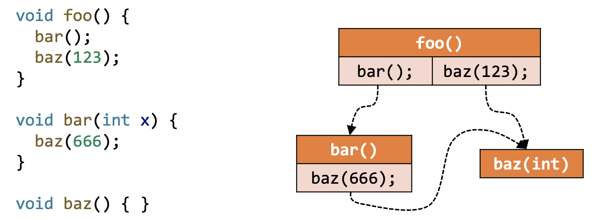call graph 的应用：
- 过程间分析的基础
- 程序优化、理解、调试、测试等
调用图构造算法：
- Class hierarchy analysis (CHA)
- Rapid type analysis (RTA)
- Variable type analysis (VTA)
- Pointer analysis (k-CFA)
从上往下分析越来越精确，但效率越来越低。
Method Calls in Java
| static call | special call | virtual call | |
|---|---|---|---|
| 指令 | invokestatic | invokespecial | invokeinterface invokevirtual |
| 是否需要实例化对象 | N | Y | Y |
| 被调方法 | 静态方法 | 构造函数 私有实例方法 父类实例方法 |
其他实例方法 |
| 被调方法个数 | 1 | 1 | >=1 (多态) |
| 被调方法确定时机 | 编译时 | 编译时 | 运行时 |
构造调用图的关键在于如何处理 virtual call？
Method Dispatch of Virtual Calls
在运行时，一个虚调用 根据两点来确定具体调用哪个方法：
- 调用者实例对象类型（即 o 的类型），记为 c
- 调用点的函数签名，记为 m
方法签名能够唯一标识一个方法，它包括类名、方法名和方法描述符，方法描述符又包括参数类型和返回值类型
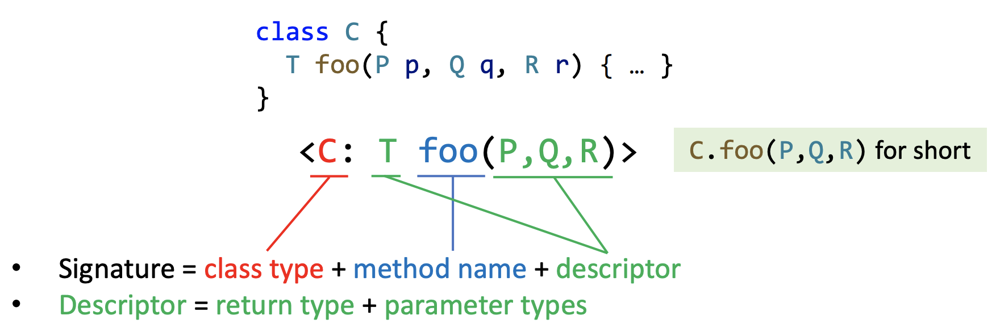Java 中 Dispatch 机制决定运行时具体调用哪个方法，我们定义函数 ：
如果在类 c 当中存在一个和 m 的方法名和描述符都相同的非抽象方法 ，那么调用该方法，否则递归父类查找。
🌰
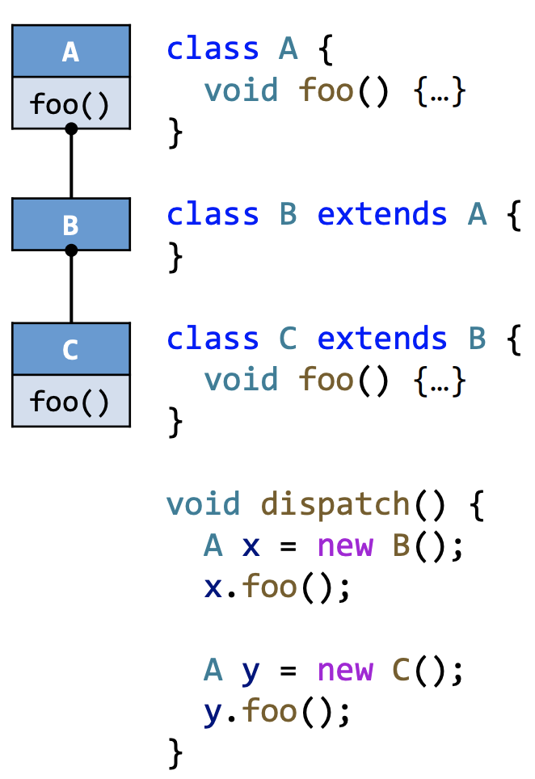
Class Hierarchy Analysis (CHA)
类继承分析（CHA）通过查找类的继承结构来确定具体的被调方法：
-
需要整个程序中类的继承信息（继承结构）
-
根据调用点的接收变量（receiver variable）的声明类型来解析 virtual call（下面代码中的 a 就是接收变量）
-
假设接收变量 a 可以指向 A 类及 A 的所有子类的对象
Call Resolution of CHA
我们定义函数 来分析调用点 cs 处可能的目标方法，具体算法如下：
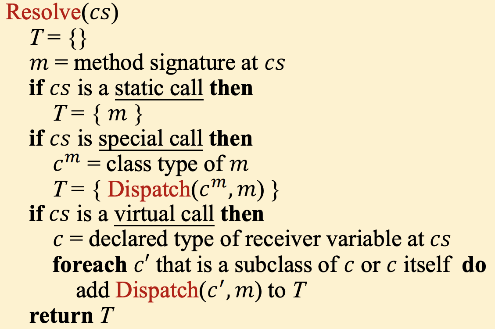-
如果 cs 是 static call，直接将该方法签名加入集合 T
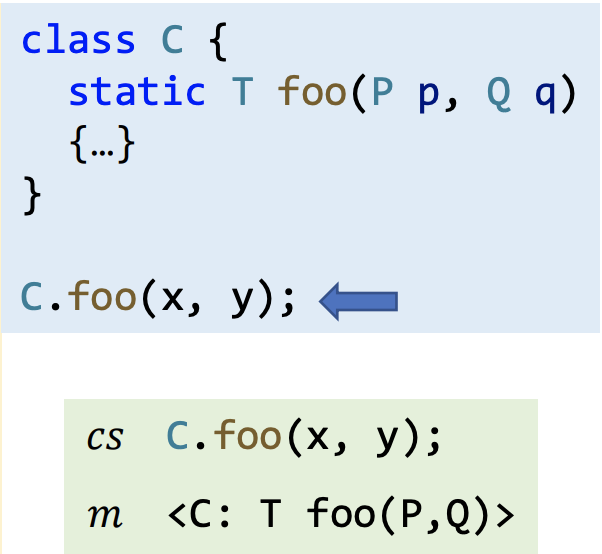 -
如果 cs 是 special call，取方法 m 的类 并调用 Dispatch 函数，将结果加入集合 T
-
构造函数（Constructor）
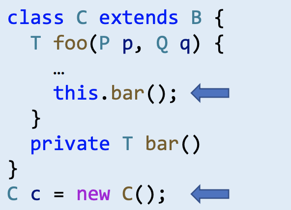 -
私有实例方法（private instance method）
-
父类实例方法（Superclass instance method）
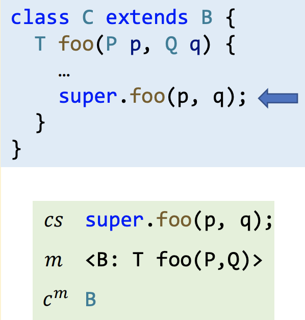
-
-
如果 cs 是 virtual call，取 cs 处接收变量的声明类型 c，遍历 c 及 c 的所有子类并调用 Dispatch 函数，将结果加入集合 T
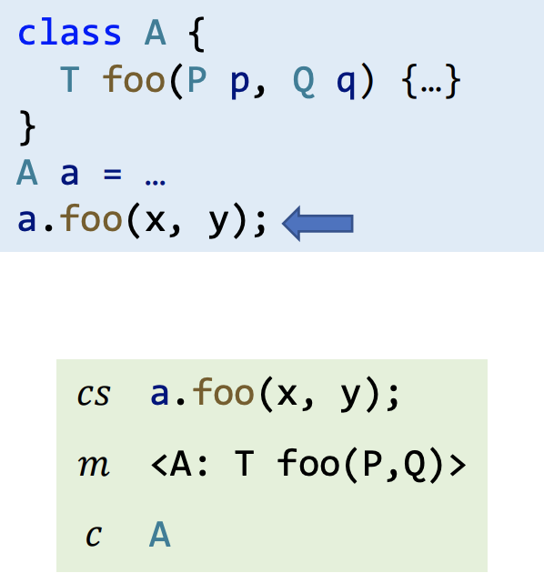
🌰
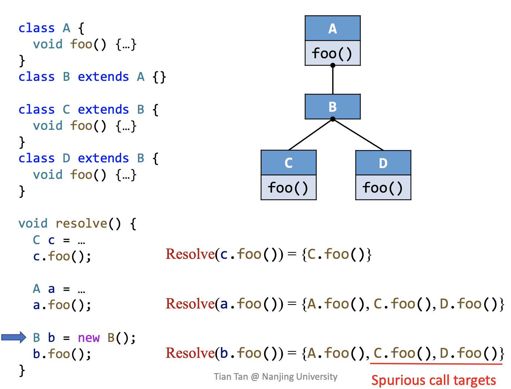CHA 只考虑调用点处接收变量的声明类型去分析目标方法，即使实际 new 了一个 B 类，依然会产生两个误报 C.foo() 和 D.foo()
CHA 的特征：
-
Advantage: fast
仅考虑 call-site 处接收变量的声明类型及其类的继承结构，而忽略了数据流和控制流信息。
-
Disadvantage: imprecise
容易产生大量误报
CHA 的应用：IDE（如 Intellij IDEA）
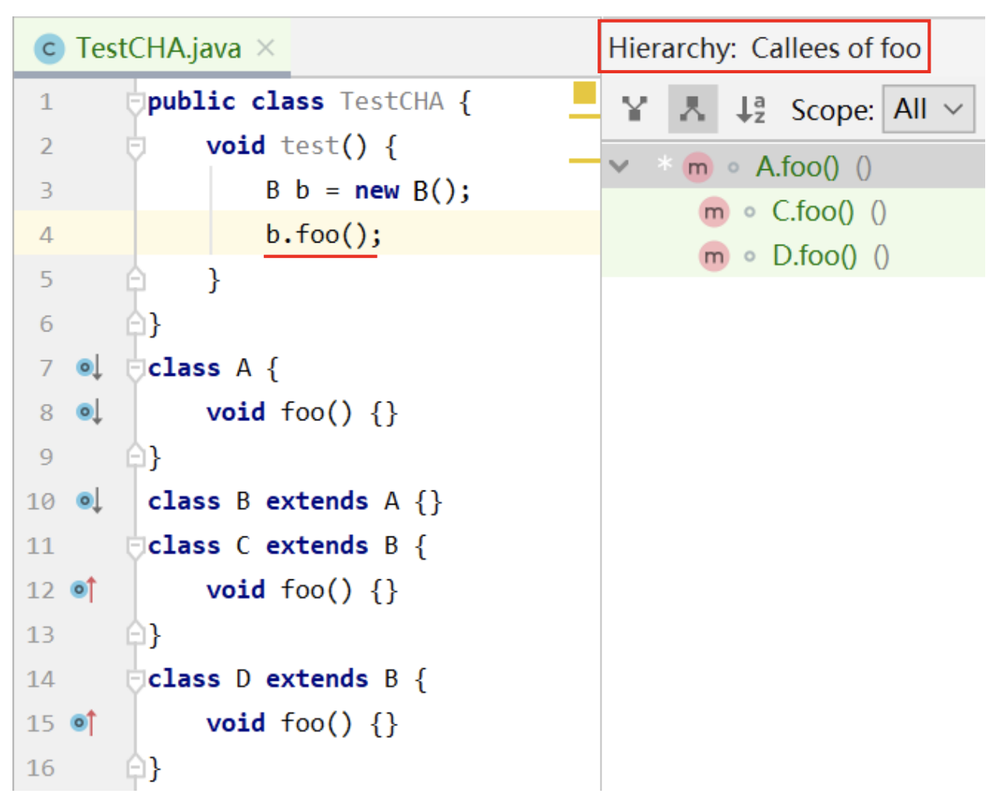Call Graph Construction
通过 CHA 构建整个程序的 call graph：
- 从入口方法开始（main method）
- 对于每一个可达方法 m，通过 CHA 算法分析一个调用点的目标方法
- 重复以上步骤直到没有可达的新方法
具体算法：
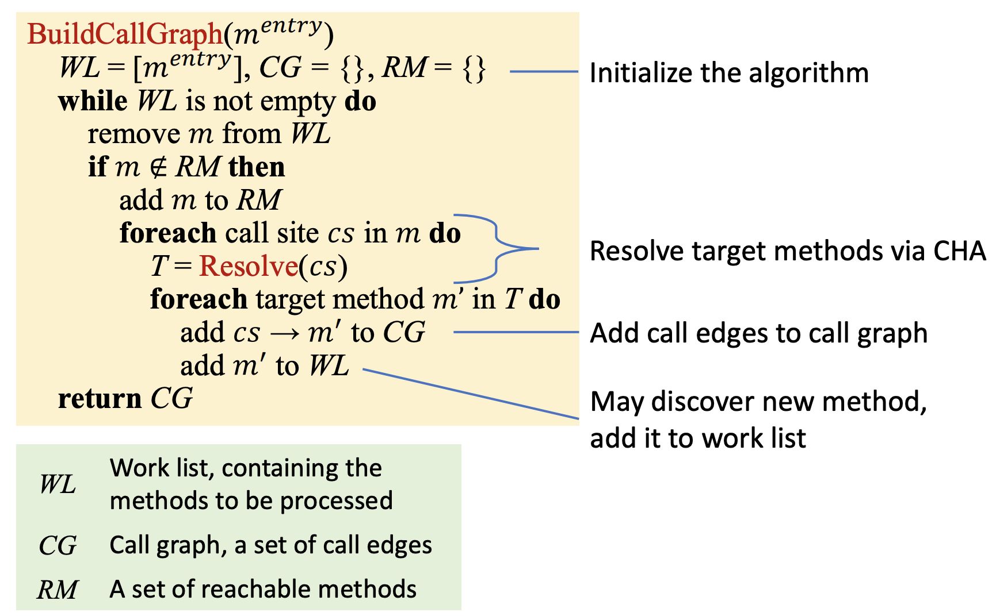- WL 即 WorkList，记录需要处理的 methods
- CG 即 call graph，是 call edges 的集合
- RM 即 Reachable Method，记录已经处理的 methods
🌰
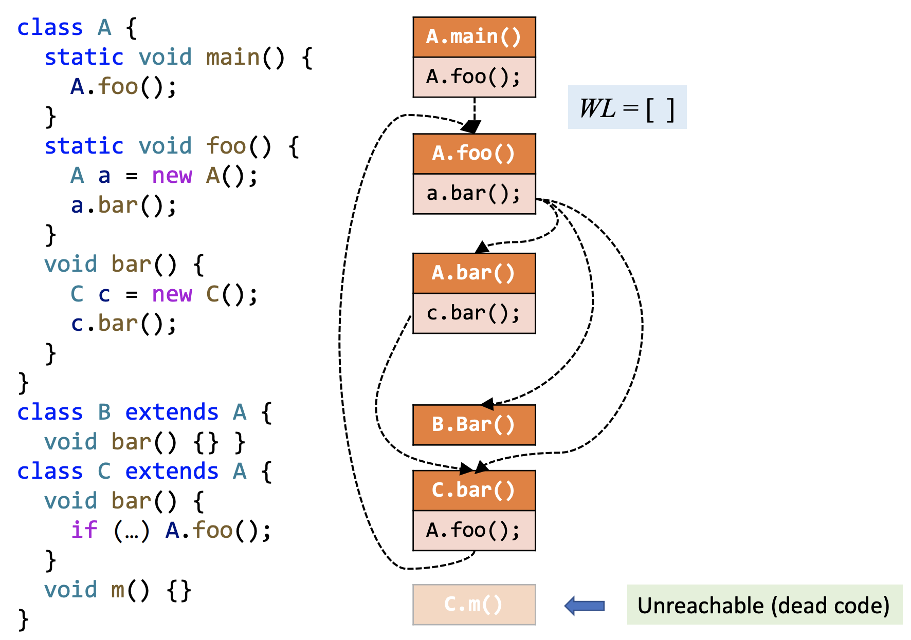Interprocedural Control-Flow Graph
-
CFG 表示单个 method 控制流关系
-
ICFG 表示整个程序的控制流关系（借助 ICFG 我们可以实现过程间分析）
-
一个程序的 ICFG 包括程序中所有方法的 CFG，以及两种额外边：
-
Call edges：从调用点（call-sites）出发到被调函数（callees）的 entry 节点
-
return edges：从被调函数的返回语句（return statements）到调用点的下一条语句（return sites）

-
我们可以理解为 ICFG = CFGs + call & return edges，而如何在 CFG 的基础上添加 call edges 和 return edges 就需要用到上文中构建的 call graph。
🌰
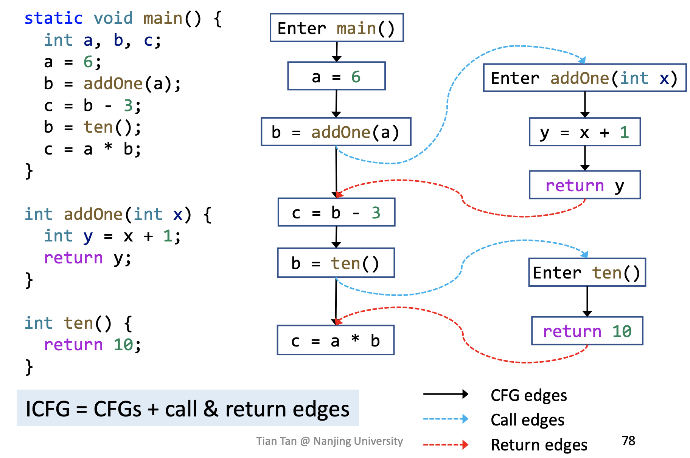Interprocedural Data-Flow Analysis
过程间数据流分析即在 ICFG 的基础上对程序进行数据流分析，与过程内数据流分析对比如下：
| Intraprocedural | Interprocedural | |
|---|---|---|
| Program representation | CFG | ICFG = CFGs + call & return edges |
| Transfer functions | Node transfer | Node transfer + edge transfer |
Edge transfer 包括：
-
call edge transfer：从 call node 到 callee 的 entry node 传递数据流（传参数）
-
return edge transfer：从return node 到 return site 传递数据流（传返回值）
🌰：Interprocedural Constant Propagation（过程间常量传播分析）
-
Call edge transfer: pass argument values
-
Return edge transfer: pass return values
-
Node transfer: 和 Intraprocedural Constant Propagation 相似，但对于每一个 call node，需要 kill 掉 LHS(Left Hand Side) variable
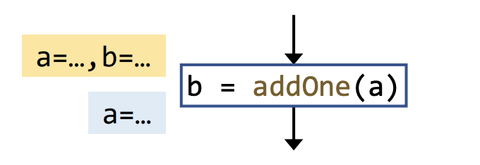
分析结果：
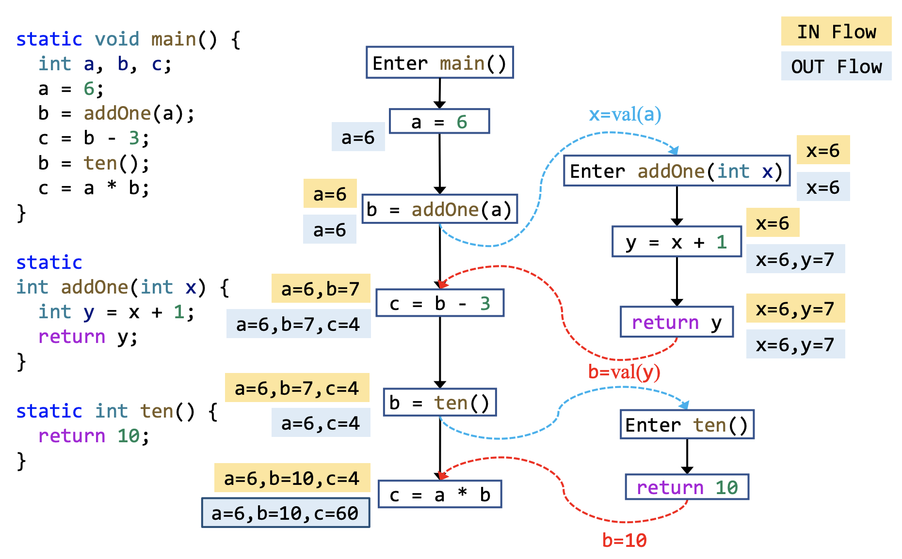Q：为什么要保留从 call site 到 return site 的边（call-to-return edge）？
A：call-to-return edge 能够在方法内传递本地数据流，如果没有这条边则需要当前方法内的上下文变量传递到被调函数，这是非常低效的！
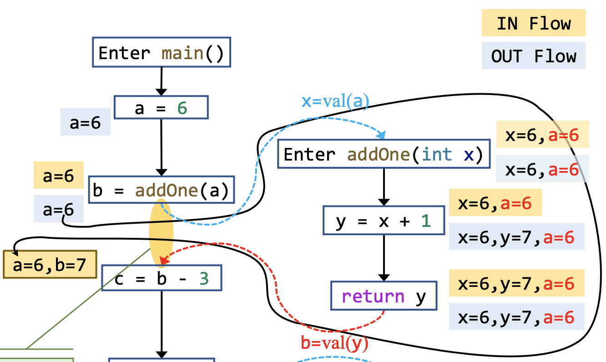假如是 Intraprocedural Constant Propagation（过程内常量传播分析），其分析结果为：
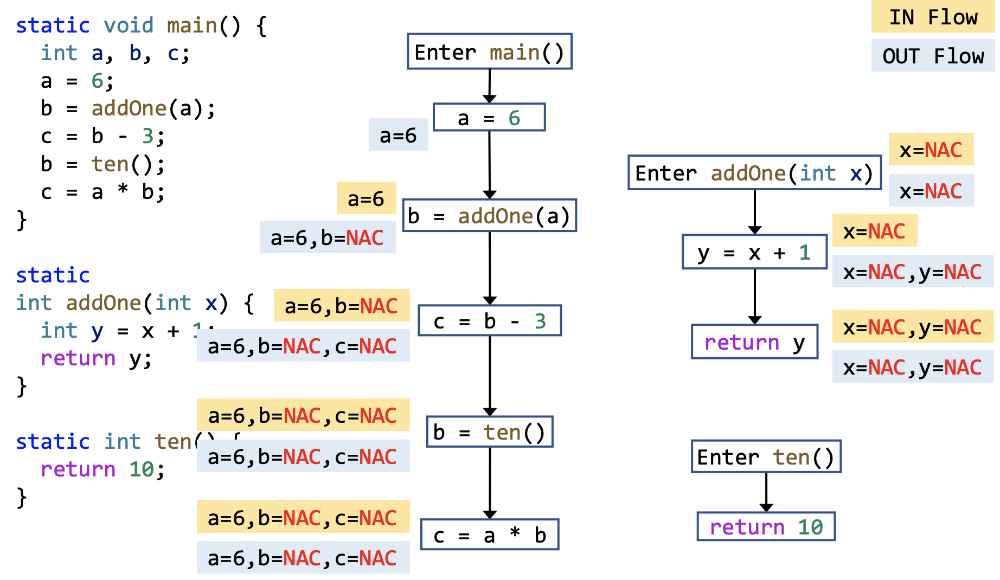显然过程间分析要比过程内分析更加精确！